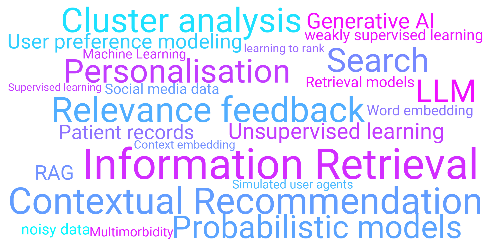

About Me
I am a lecturer (assistant professor) in the School of Engineering, Computing and Mathematical Sciences at the University of Wolverhampton. I am part of the Data Science and AI research group DAIREL at the Digital Innovations and Solution Centre, UoW. Generally speaking, my research interests include personalised information retrieval (IR), contextual recommendation, NLP, AI and data science. Before joining UoW, I was a post-doctoral researcher in the School of Informatics at the University of Edinburgh. I graduated with a PhD in Computer Science from Trinity College Dublin in 2021. My PhD supervisor was the late Prof. Séamus (Shay) Lawless, and later Prof. Owen Conlan. I was affiliated with the ADAPT Centre during my PhD. While my earlier focus was on IR from noisy text, my PhD [thesis] was about exploring IR based approaches for contextual recommendation, with a particular focus to improve precision at top ranks. At UoE, my research project involved understanding clusters of long term conditions (multimorbidity) in patients using machine learning.
Check out our Inf. Retr. J. and SIGIR work on how to effectively recommend 'points of interests' to users catering to their personalised preferences, and CIKM work on relevance feedback with query variants.
Research Interests
Teaching
- 2023
Academic Activities
Books, etc.
Publications
2 0 2 2
2 0 2 0
2 0 1 9
2 0 1 8
2 0 1 7
2 0 1 6
2 0 1 5
2 0 1 4
2 0 1 3
Find me on Google Scholar, DBLP
Contacts
School of Engineering, Computing & Mathematical Sciences, |
|
|
Data, AI, Interaction, Retrieval and Language
|
anirban.chakraborty89 |
|